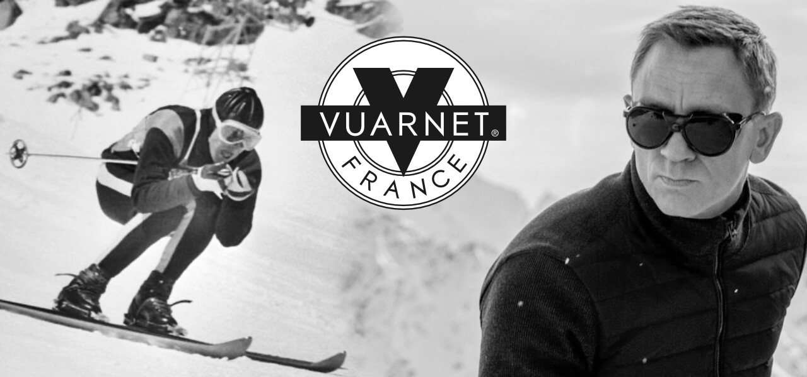
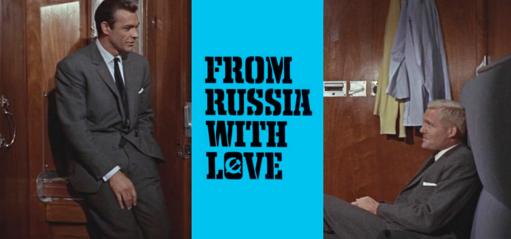

COULOIR | September 2022

The remarkable and tragic life of Jean Vuarnet
Jean Vuarnet was a French Alpine ski racer and later entrepreneur who was the first man to win Olympic gold on metal, rather than wooden, skis. He went on to spearhead the development of France’s first car-free ski resort, Avoriaz and then launched an eponymous line of sunglasses and other apparel. His wife and son became members of an apocalyptic cult that ended in tragedy in the mountains near Grenoble.
Born in the Tunisian capital of Tunis in 1933, Jean Vuarnet grew up in the ski town of Morzine, part of France's Haute-Savoie region, but spent much of his youth in the cities of Grenoble and Annemasse. Most of his ski practice was done during school holidays so he had to supplement this by observing the top skiers. These observations saw him develop an aerodynamic stance and ski positioning which would later help him take gold at the Squaw Valley Olympics in 1960. After his victory Jean, now married to Edith Bonlieu was inundated with offers, taking the job as the head of tourism for Morzine. He then partnered with a sunglasses manufacturer to launch Vuarnet, which after a slow start, found fame in the 80s with the likes of Mick Jagger wearing them. In a link to our Bond in the Alps series, Daniel Craig wears a pair of Vuarnet glacier sunglasses in the movie SPECTRE.
While working for Morzine Tourism, Jean and Gerard Bremon developed a plan for the resort of Avoriaz, high on the cliffs above Morzine. He also found time to manage the Italian ski team. Jean's busy life meant he'd spent little time with his family or raising his three boys; Pierre, Patrick and Alain. The only time the family spent together was during extended summer vacations. This didn't slow Jean down though and the 1980s saw Jean start a book publishing company which by the 1990s had turned into a retail empire - Vuarnet International.
Things took a turn in October 1994 when two journalists showed up at his door with news that his wife Edith and the youngest son Patrick, had joined an apocalyptic cult - the Order of the Solar Temple. The order was responsible for mass suicides in Switzerland and Canada, where the bodies of 53 members were found dead and partially burned. Inspired by the Knights Templar, the order was founded by an osteopath Luc Jourret and Joseph Di Mambro, a jeweller. Both died in the incident.
Jean spent the next year trying to persuade Edith and Patrick to leave the order but tragically, during Christmas 1995, they were discovered in the forests of the Vercors by French police amongst the charred remains of 14 victims. Investigators said a police officer, Jean-Pierre Lardanchet and Swiss architect André Friedli shot and arranged them in a star formation, before dousing the bodies with gasoline and setting them alight. They then killed themselves. Autopsies showed that most of the victims had taken sleep-inducing drugs. Despite a public outcry and civil lawsuits, Michel Tabachnik, a Swiss conductor thought to be the Order's new leader, was acquitted.
Jean Vuarnet later married Christine who died of a heart attack in 2012. Jean died in 2017 aged 83. Michel Tabachnik maintains his innocence and continues his work as a musical conductor today.
Bond in the Alps
James Bond was created by the author Ian Fleming in 1952 for the novel Casino Royale. Fleming was born in 1908 and was educated at Eton and Sandhurst in the UK before going to Austria to attend the Tennerhof School in Kitzbühel, Munich University in Germany and the University of Geneva in Switzerland. The time he spent in the Alps gave him a love for the mountains and made him an accomplished skier.
Fleming joined the Royal Navy shortly before the Second World War and worked for the Naval Intelligence Division (NID) where he had oversight of two intelligence units - 30 Assault Unit and T-Force.
Fleming's time in NID was the inspiration for ten James Bond novels and a series of short stories. Two of his novels were made as films before Fleming died, aged 56.
From Russia with love
It was five books in before the Alps made an appearance in the Bond novels and not in the plot. In the book Bond reminisces about his youth:
Lunch came. Bond put aside his book and the thoughts that kept coming between him and the printed page, and, while he ate, he gazed down at the cool mirror of the Lake of Geneva. As the pine forests began to climb towards the snow patches between the beautifully scoured teeth of the Alps, he remembered early skiing holidays. The plane skirted the great eye-tooth of Mont Blanc, a few hundred yards to port, and Bond looked down at the dirty grey elephant's skin of the glaciers and saw himself again, a young man in his teens, with the leading end of the rope round his waist, bracing himself against the top of a rock-chimney on the Aiguilles Rouges as his two companions from the University of Geneva inched up the smooth rock towards him
The Aiguilles Rouges would make another more poignant appearance in You Only Live Twice. Towards the end of the book Bond takes the Simplon-Orient Express train through Switzerland. Fleming had taken this journey himself, although he didn't rate it as the restaurant car was closed - the nerve! You can still take the journey today as part of the Venice Simplon-Orient-Express - a private luxury train service from London to Venice, or just take one of the daily Swiss trains that use the Simplon tunnel to Italy for a cheaper option.
In the film of the book - Sean Connery's Bond doesn't daydream about the Alps but he does take the Orient Express in the other direction - from Istanbul to Venice past the Slovenian and Italian Alps. Bond only makes it to Trieste though thanks to Captain Nash - played by Robert Harris - who is an imposter with a bad accent. Sorry old man. Bond leaves the train and fends off a helicopter in what should be the pre-Alps but the scene was filmed in Scotland thanks to film grants. Bond does end up in Venice for the closing scenes.
Interesting links
- Tracking the Locations of J.G. Ballard’s Super-Cannes
- Tom Sachs exhibition Helvetiaphilia
- Martijn Doolaard - Life at the cabin
- The Architecture of Avoriaz, France
Subscriber offer
Get 20% off the Chamonix Travel Guide with code: CTG22